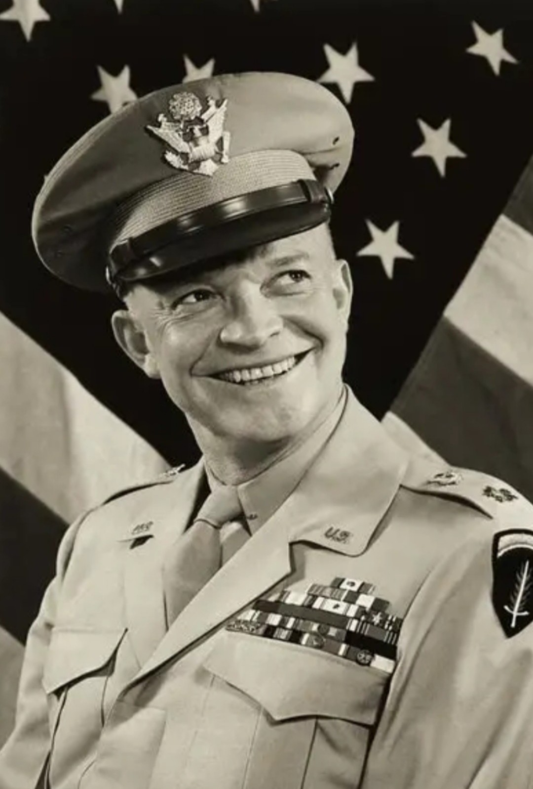

Commandant suprême des forces alliées – Europe, 1944‑1945

Dwight David Eisenhower (1890–1969) est un général américain et le commandant suprême des forces alliées en Europe durant la Seconde Guerre mondiale. Il coordonne les opérations majeures qui conduisent à la libération de l’Europe.
Eisenhower dirige l’opération Torch en Afrique du Nord (1942), supervise la campagne d’Italie (1943) et orchestre le débarquement de Normandie le 6 juin 1944. Il coordonne ensuite l’avancée alliée jusqu’à la capitulation allemande en mai 1945.
Eisenhower est étudié comme l’un des principaux architectes de la victoire alliée en Europe. Son sens de la coordination, sa gestion des coalitions et son leadership ont été déterminants dans l’issue de la guerre.